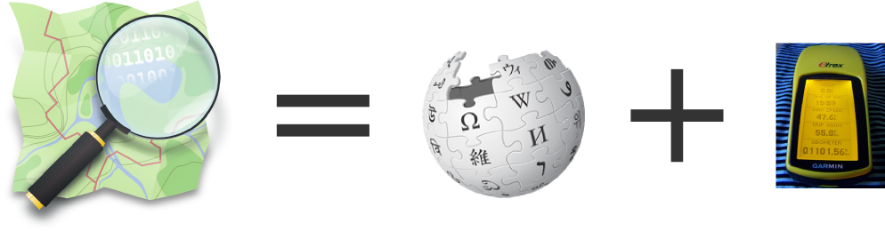

- No Software Livre desde 2005
- No OpenStreetMap desde 2010
- Desenvolvimento Web & GIS
- Python / Django / Leaflet...
- Desenvolvedor da empresa Hex Gis
Quem sou?
Onde colaboro?
O que é o OpenStreetMap?
Um projeto comunitário para cartografar o mundo, a partir da colaboração dos diversos usuários.
http://osm.org
Por que criar um mapa livre?
Por que não usar algum dos serviços de mapas comerciais existentes?
Restrições de Copyright
Restrições de Copyright
Licença do Google Maps
"Para usuários individuais, o Google Maps, incluindo os resultados de pesquisas locais, os mapas e as imagens fotográficas, estão disponíveis apenas para uso pessoal, não comercial. Para usuários empresariais, o Google Maps incluindo os resultados de pesquisas locais, os mapas e as imagens fotográficas, estão disponíveis apenas para uso interno e não pode ser redistribuído comercialmente."
Desvantagens de mapas providos por empresas
- Faltam mapas de cidades pequenas ou áreas economicamente pouco desenvolvidas.
- O foco do mapa geralmente é em informação para carros.
- Demora em ser atualizado.
- Não podemos editar o mapa.
- Quando se pode editar, suas contribuições viram propriedade da empresa.
Problemas políticos...
Comunidade OpenStreetMap
Um projeto global. Quase 2 milhões de colaboradores cadastrados.

Crescimento dos dados

Distribuição das edições

Edições ao vivo!
O OSM vai além de vias e POIs
Pode-se mapear praticamente tudo o que vemos
Dados de excelente qualidade!

Destaque na Wired
O OSM não é apenas um mapa,
mas sim um banco de dados de informações geográficas
Renderização Padrão
Cycle Map
Transporte Público
Renderização 3D: f4map.com

Licença ODBL: Open Database License
Ecossistemas de Softwares
Casos de uso
Haiti
Utilização pelas equipes de resgate após o terremoto de janeiro de 2010.
Tufão Haiyan (2013), Filipinas
HOT - Humanitarian OpenStreetMap Team
Wheelmap.org
Informações sobre acessibilidade baseadas no OSM
Técnicas de Mapeamento
Técnicas de Mapeamento
- Imagens de satélite
- Nomes de ruas a partir do IBGE
- Trilhas de GPS
- Mapeamento em campo
- Fotos georreferenciadas
- Aplicativos de celular
- Field Papers
OSMTracker
OsmAnd
Como colaborar
- Edite o mapa pelo site
- Envie trilhas de GPS
- Adicione notas ao mapa
- Solicite dados públicos
- Nunca copie dados de outros mapas
Obrigado!
diaspora diasp.org/u/wille